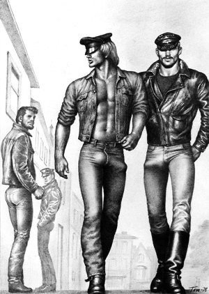

Tervehdys isänmaalliset toverit. Olemme Soldiers Of Odin järjestön hetero versio.
Nahkaliivit on homon merkki kyllä se näin on
Soldiers of Odin sanoo olevansa suomen puolella mutta käyttävät venäläistä sosiaalista mediaa sekä venäläistä pikaviestintä pääsääntöisessä kommunikoinnissa.
Soldiers of Odin sanoo olevansa kansallismielinen ja globalismia vastaan mutta support tuotteet tilataan ulkomailta jotta perustajille jää enemmän rahaa taskuun ja samalla suomesta katoaa työpaikat

Odinit valvomassa Tornio-Haaparanta rajalla pamput taskuissa